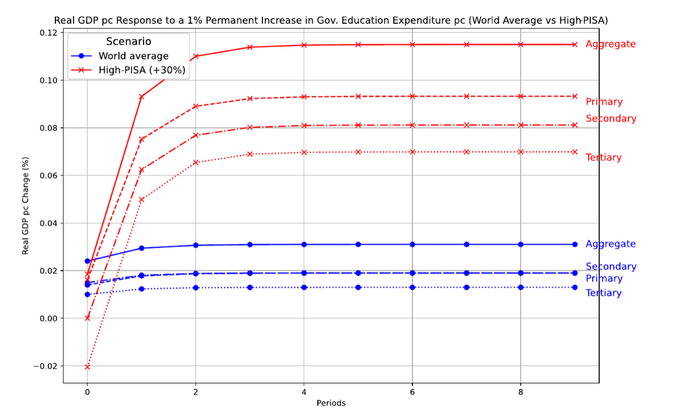

Education Spending and Economic Growth: Short- and Long-Term Effects in a Global Panel
Dante Contreras, Arturo J. Galindo & Ignacio Lepe · Review of Development Economics, 2026
Abstract
This paper examines the short- and long-term effects of education expenditure on economic growth using a global panel of 107 countries from 1970 to 2019. Employing a CS-ARDL model with an error correction framework, we estimate dynamic responses to aggregate and disaggregated real education spending across primary, secondary, and tertiary levels. Results show that public investment in education has a statistically significant and positive impact on real GDP per capita, both in the short and long run. The long-run elasticity is highest for aggregate expenditure and comparable across primary and secondary education, though smaller for tertiary education. We further explore heterogeneity in long-run effects and find that higher educational achievement, proxied by PISA scores, amplifies the growth impact of education spending. Simulations confirm that countries with higher PISA scores experience faster and stronger returns to investment. These findings underscore the role of education quality in enhancing the productivity of public education spending and support targeted policy efforts to improve both the quantity and quality of educational investment.
Insights

Citation
@article{contreras2026education,
author = {Contreras, Dante and Galindo, Arturo J. and Lepe, Ignacio},
title = {Education Spending and Economic Growth: Short- and Long-Term Effects in a Global Panel},
journal = {Review of Development Economics},
year = {2026},
doi = {10.1111/rode.70167}
}Links
Journal article (Review of Development Economics)
Working paper (IDB Technical Note IDB-TN-3178)
JEL: I25, H52 · Keywords: educational expenditure, economic growth, error correction model